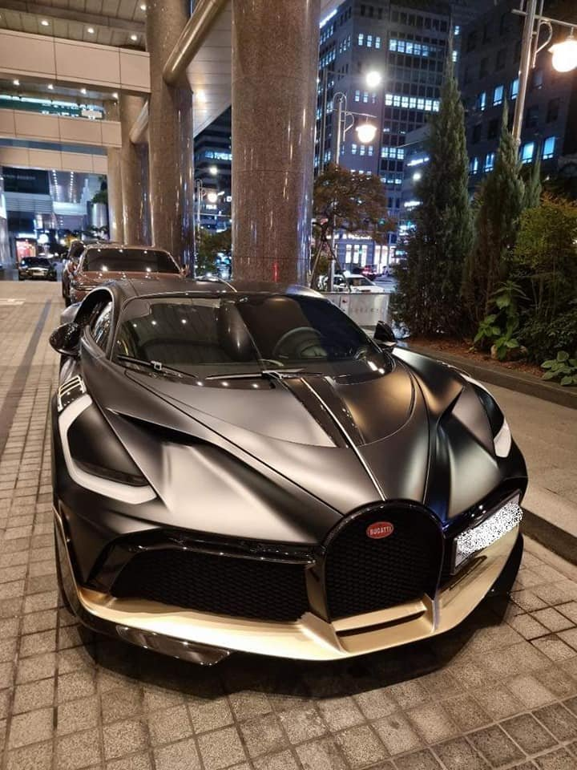

전 세계 40대만 한정 생산된 하이퍼카 '부가티 디보'가 최근 국내에서 포착되어 화제입니다. 자동차 커뮤니티 등에서는 이제까지 볼 수 있었던 슈퍼카·하이퍼카와는 또 다른 외모를 가진 '부가티 디보'가 어떤 차량인지에 대해서 그 관심이 증폭되고 있습니다.
2021.11.10. 18:11

에어로다이나믹에 중점을 두어 만든 부가티 디보는 시론보다 다운포스를 90kg 더 강화하였고, 루프 에어덕트는 에어플로우를 최적화시키고 리어 스포일러는 시론 대비 23%나 커졌으며, 무게는 35kg 감량했습니다. 시론에서 개선된 만큼 디자인 역시 많은 변화가 이루어졌는데, 기존의 시론과 비교해 그래픽적인 느낌이 더욱 부각된 것이 특징입니다. 헤드램프는 세로로 배치됐고, 후드에는 새로운 에어 덕트가 추가됐습니다.